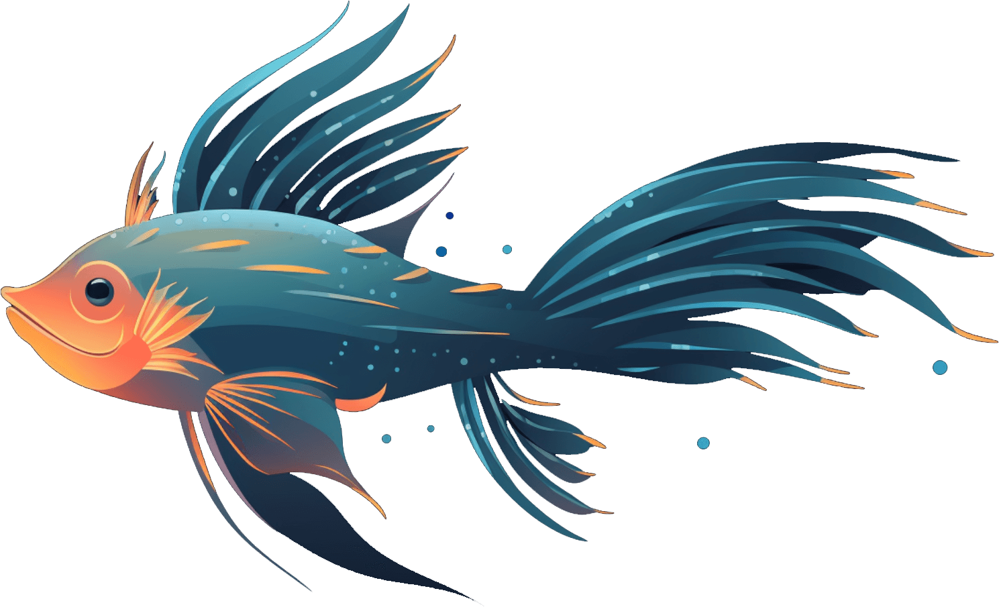
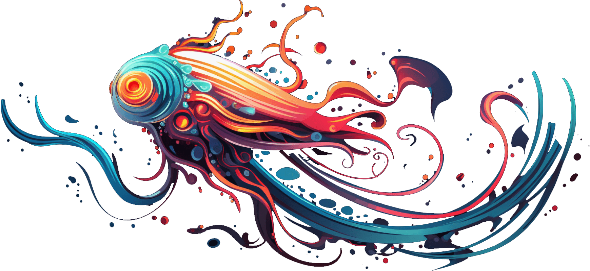
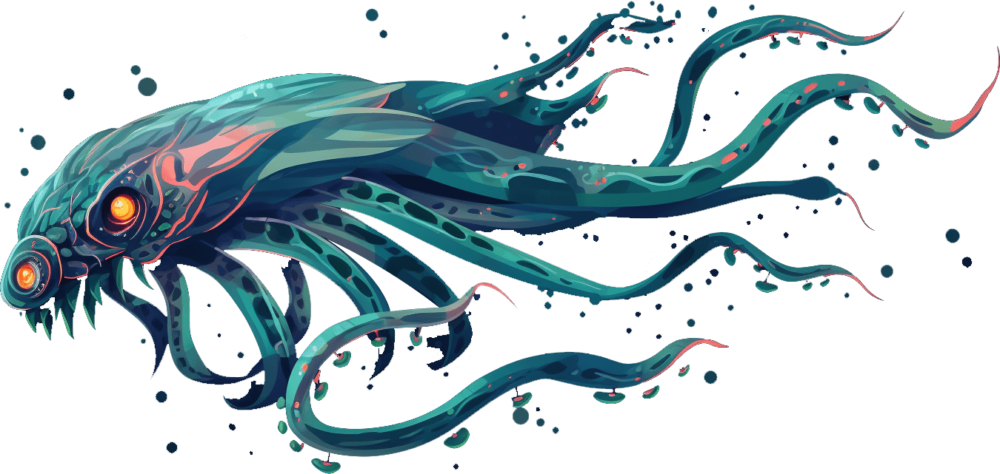

lumfin
The Lumfin is a bioluminescent fish that boasts wing-like fins which emit soft, pulsating glows, illuminating the ocean's deepest crevices. Its long ribbon-like tail acts like a rudder, allowing it to dance gracefully along the underwater currents.

nyxel tentaclea
The Nyxel Tentaclea is a deep-sea cephalopod cloaked in inky blackness, with dozens of slender, retractable tentacles covered in tiny phosphorescent dots that mimic the night sky. When threatened, it releases a cloud of shimmering starlit ink, dazzling its predators.

abyssal spirejaw
Residing in the deepest ocean trenches, the Abyssal Spirejaw has a transclucent spiral-shpaed body, culminating in a jaw that resembles twisted spires, allowing it to snag and swallow unsuspecting prey.